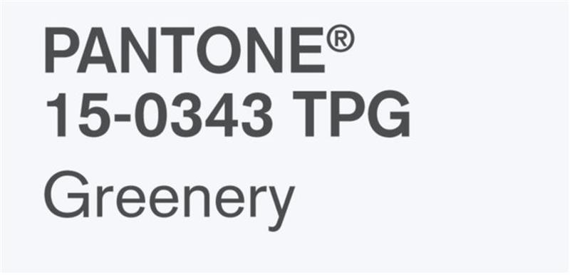
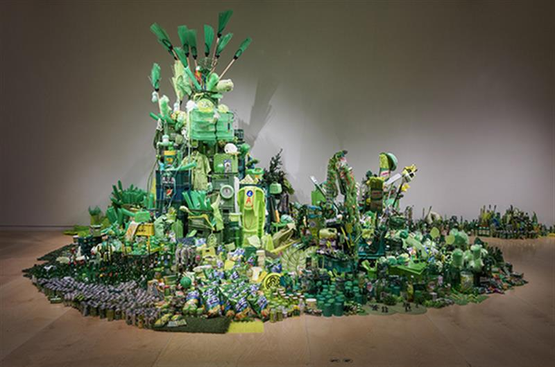
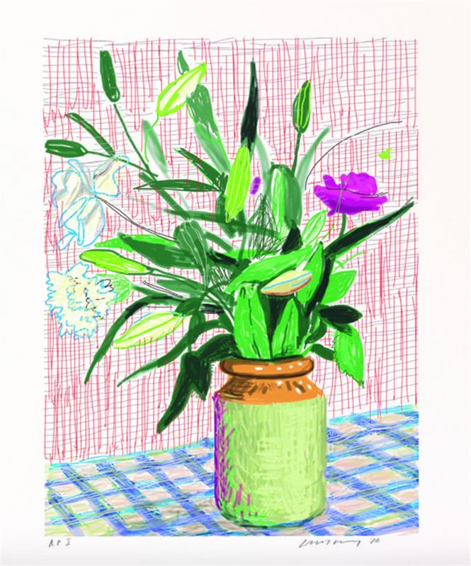

Jonas Wood, Dinosaur Pots Still Life, 2014, is a work that would well-illustrate 'Greenery,' the new Pantone color of the year. via Anton Kern Gallery website.
The vibrant shade reflects broader social trends.
Sarah Cascone, December 8, 2016
Jealously isn’t a good look on anyone, but expect the world to be seeing green in 2017, because Pantone has named a new Color of the Year.
Described by the company as a “a fresh and zesty yellow-green shade that evokes the first days of spring,” the powers that be at Pantone selected Greenery as a calm response to the contentious events of 2016, from Brexitto the US presidential electionand beyond.
“We know what kind of world we are living in: one that is very stressful and very tense,“ Leatrice Eiseman, the Pantone Color Institute’s executive director, told the New York Times. “This is the color of hopefulness, and of our connection to nature. It speaks to what we call the ‘re’ words: regenerate, refresh, revitalize, renew. Every spring we enter a new cycle and new shoots come from the ground. It is something life affirming to look forward to.”

Greenery is Pantone’s 2017 color of the year. Courtesy of Pantone.
The nature-inspired color, which “signals vitality, energy and warmth from the sun,” Pantone vice president Laurie Pressman told CNN, also serves a reminder to unplug once in awhile. “We are so submerged in our routines and tethered to devices, but we have a great desire to disconnect and replenish,” she added.
Greenery is also a call to action, of sorts, serving as a reminder of the dangers of the greenhouse effect and the necessity of taking measures to combat global warming.

Han Seok Hyun, Super‑Natural(2016). Courtesy Hanseok Hyun/Park Myung Rae, © Museum of Fine Arts, Boston.
The rejuvenating shade has been on the company’s radar for some time: in September, Pantone named Greenery as one of its top 10 colors for a spring 2017 style forecast. The highly-subjective process of choosing the color of the year reportedly takes nine months, and involves carefully studying trends in fashion, social media, consumer products, and technology.
In the art world, the color was spotted in the leafy green logo of PULSEart fair, the vibrant iPad landscape paintings of David Hockney, and at “Megacities Asia,” at the Museum of Fine Arts Boston, where Han Seok Hyun’s Super-Naturalpiled green plastic objects into an inorganic mountain.

David Hockney, Untitled, 516(2010) © David Hockney, courtesy of Richard Schmidt.
Greenery follows on the heels of Rose Quartz, a light pink, and Serenity, a baby blue, which shared the Color of the Year designation in 2016. It was the first time Pantone had selected not one but two separate shades, citing “societal movements toward gender equality and fluidity” as their inspiration.
For 2015, the color marketing institution tapped Marsala, a rich reddish brown color that divided critics (and the public). Later that year, Pantone released its first new color in three years, the cheerful Minion Yellow, named after the beloved characters from the Despicable Memovie franchise.
SOURCE: artnet news